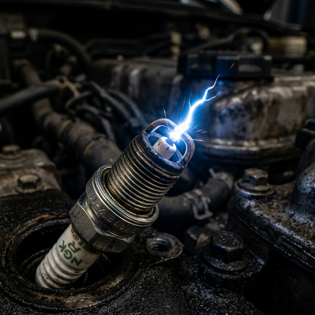

Our Story
JIANSH Spark Plugs was founded with a singular vision: to manufacture spark plugs that set new standards in performance, reliability, and durability. What began as a commitment to quality has evolved into a legacy of excellence in the automotive industry.
Located in Ghaziabad, our state-of-the-art manufacturing facility combines traditional craftsmanship with cutting-edge technology. Every spark plug that leaves our facility represents our unwavering dedication to precision engineering.
